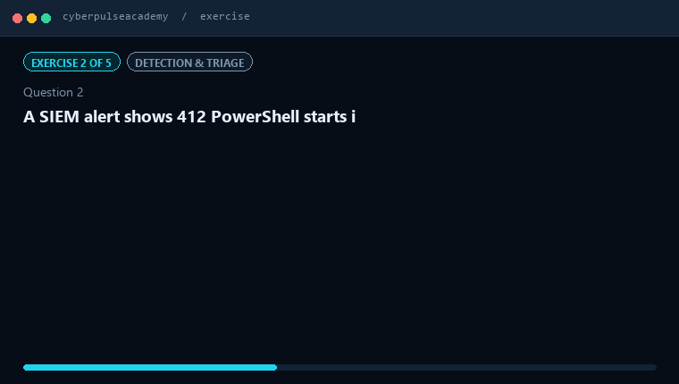

Free, and staying free
Every exercise here is free, and it always will be.
No paywall. No subscription. No adverts and no tracking. Keeping it that way has a real cost: hosting, the tooling each exercise is built and checked with, and the hours that go into writing one properly.
€3 covers two new exercise batches. That is the whole ask, and it is what keeps this free for the next person who needs it.
Learn cyber security by doing it, not by reading about it.
Every topic starts with a plain-language explanation you can follow even if you have never worked in security. Then you practise: read the alert, look at the evidence, choose what to do, and find out why the answer was right. Free, no account, and nothing to install.
- No sign-up needed
- No adverts
- No tracking
- Works on a phone

New to cyber security? Start here.
These three pages are written for someone with no security background. Each one explains the idea in plain words first, then shows you where it appears in real work.
What is a firewall?
The guard that decides which network traffic is allowed in and out, and why "a firewall" is never just one thing in a real company.
What is phishing?
How a message that looks ordinary gets someone to hand over access, and the four things an analyst actually checks on a reported email.
What does a SOC analyst do?
A day in the life: which alerts arrive, how you decide what matters first, and why "close as false positive" is sometimes the correct answer.
How a topic works
Read the plain explanation
Every page opens with a short beginner section: a simple definition, why it matters, how it works in steps, a real-world example, and the key takeaways.
Go deeper if you want to
Below that is the detailed technical explanation, written for people who already work in security. Skip it the first time. It will still be there.
Open an exercise
Exercises are lessons, quizzes and hands-on scenarios. You pick an answer, and the screen explains why it was right or wrong.
Keep your score
Results are saved in your own browser. Nobody else sees them, and you can delete them from the footer at any time.
Continue where you left off
No results recorded on this device yet. Pick any topic above to begin.
Browse the catalogs
Seven catalogs, one place. Each entry has its own page, and each page lists the exercises that go with it.
Recently reviewed
Loading recent topics.
Still being written
Still being written
Some topics already have exercises. Others are waiting for theirs.
Support
This site is free, and it has no adverts.
Every exercise here was written by hand. If the site helps you, a small donation pays for the time it takes to write more of them. It is never required, and nothing is locked behind it.
Voluntary personal support. Not a purchase. Not tax-deductible. Donations are processed by PayPal, and this site never sees your card details.